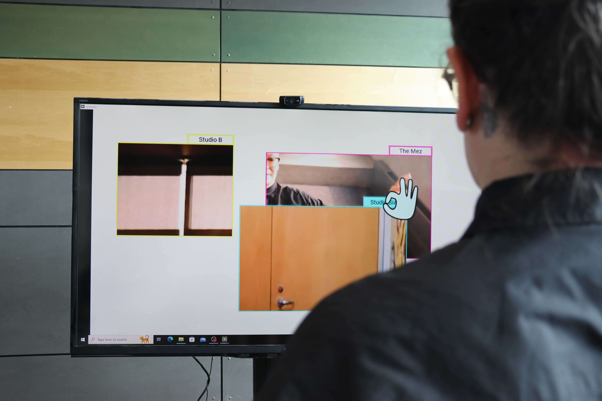
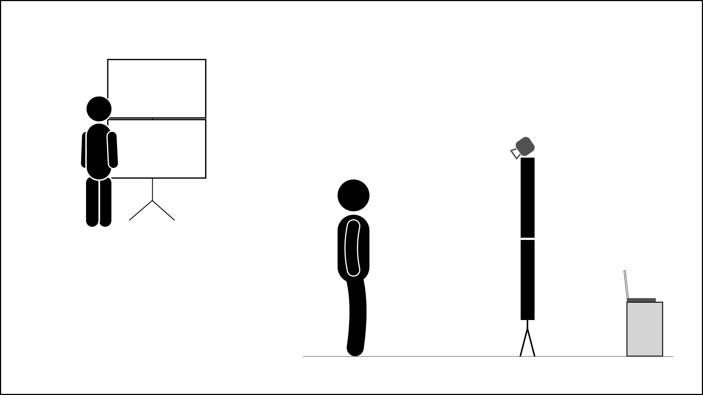
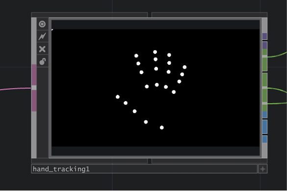
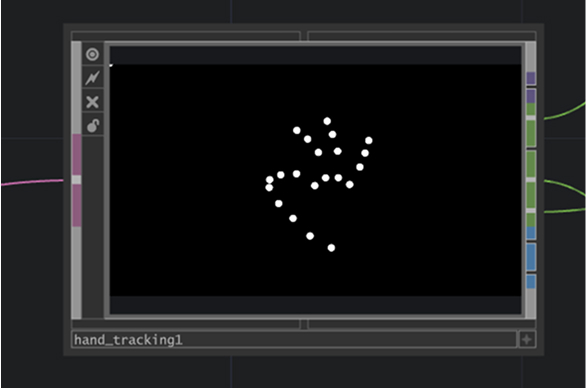
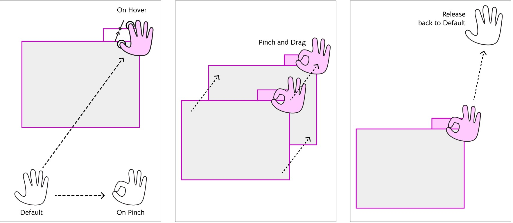
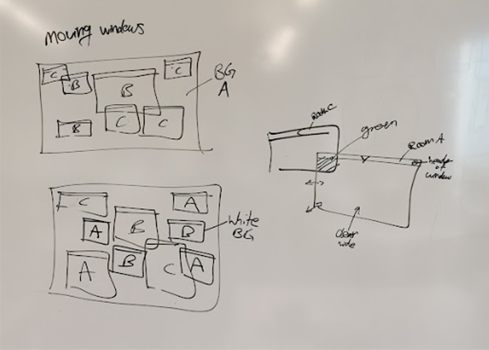
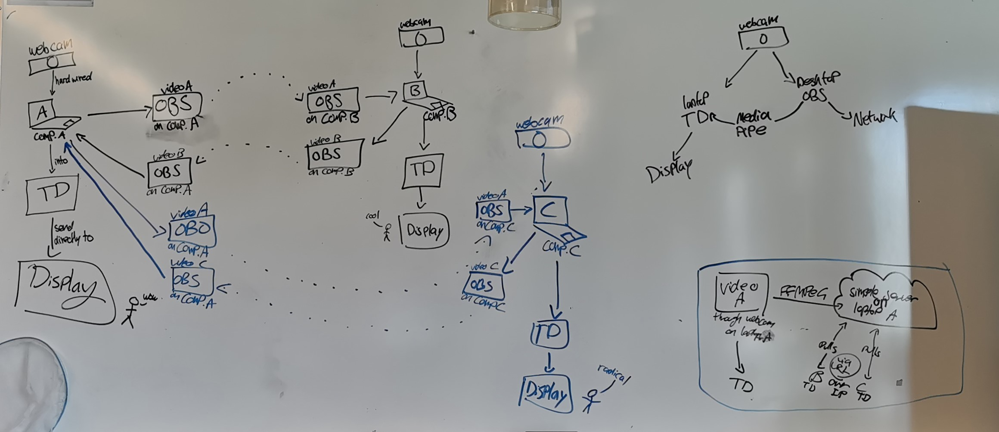
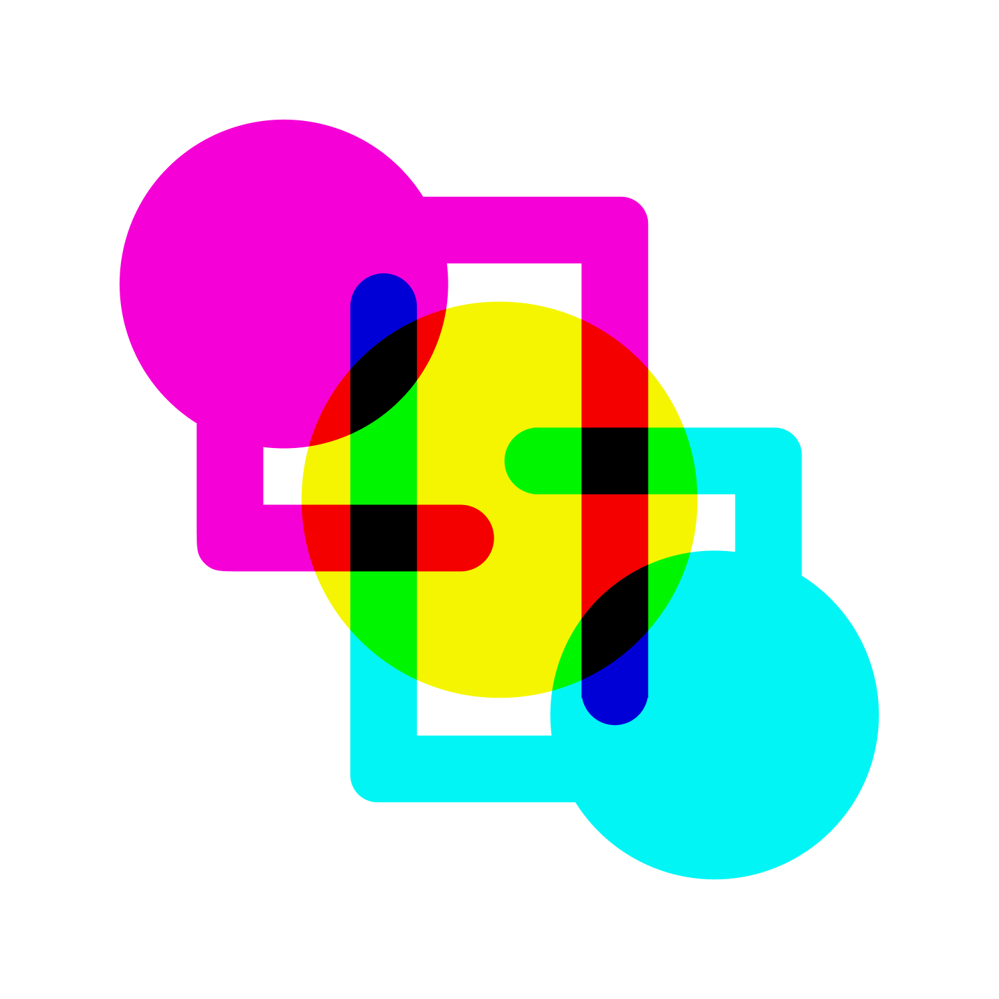

Telematic Parallels
An interactive video installation with TouchDesigner

Telematic Parallels is a site-specific interactive video installation that connects remote locations rooted in a similar purpose. Through three live video feeds composed into a singular tableau, this digital collage collapses the distance across space. Using hand tracking and gestures, users can experience a sense of play as they create a liminal arrangement that connects each space to each other.
As students from Simon Fraser University (SFU), Triane and Mackenzie started with the goal of connecting the three satellite campuses of SFU through telepresence. Although the campuses are geographically separated, the joint activity of going to University at SFU links students through a common experience. The installation allows students to see the university in parallel across campuses.


interaction para img caresoule




The installation sets out to capture a sense of play; with its bright colour scheme; with its cartoon hand icons. Connection is gained between two viewers who are both interacting with the installation at the same time in different locations on campus. Moving the windows to see better, viewers bond over the shared experience in a joyful way. It mirrors how everybody on campus is bonded over all participating within the university: together.
Since the concept revolved around three locations, the piece uses classic CMYK colours to differentiate each place. Cyan, Magenta, and Yellow are all bright and distinct from each other, perfect for each location to have its own identity. The colours appear in the window outlines, tabs, and in the hand-icon cursor.


Each location's setup consisted of a TV screen display, a tower PC for running all the programs, and a desktop set up for on-the-fly fixes. A webcam on the TV captured the live footage via OBS which then streamed to YouTube Live. There needed to be three YouTube accounts since you can only have one stream live at a time per account. For each location, its own footage was sent from OBS to TouchDesigner through a plugin called MediaPipe. The other streams of video were sent into TouchDesigner though a native feature for importing web content.
TouchDesigner by Derivative is a node-based program for audio/visual interactions. In TouchDesigner, the local video comes in through the MediaPipe plugin and the live video content from the other locations is imported and cropped through a web node. Hand tracking is also done with MediaPipe using a Google AI model. By calculating the distance between fingers and checking whether the cursor is overlapping with the handle of the windows, the user can grab and move the video windows.
The cursor changes shape and colour to indicate to the user which state it is in.This allows for constant visibility of the system's status with immediate user feedback. Therefore, users trust the outcome of their previous actions and use that to determine their next course of action. The consistency of the interaction allows for an easier to learn and more intuitive user experience.
As long as the window is 'grabbed' by the user, it moves with their hand. The window only shows the picture within its bounds. So, moving it around reveals more of the picture behind it which is another location on campus. Being able to uncover the background of the other locations as well as the users at the other sites is the core of the project's experience.


Originally, Telematic Parallels was designed to be only a proof of concept with only the interactions prototyped and the video networking technology figured out. However, over the course of the semester Triane and Mackenzie worked tirelessly to get the installation finished and off the ground for a final exhibition, which they did successfully. With the finished version of the installation, Blue Suitcase Studio will reinstall across SFU and further beyond.
